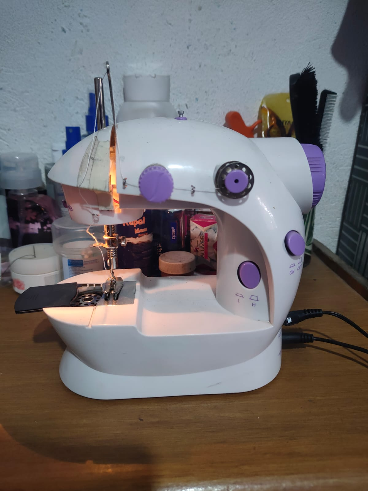

Maquinas
the sew machines was created to supply a first war needed where, it was required uniforms to military in large cuantities.
Mini maquina de coser
Sus componentes son el pedal de pie que va conectado a la parte de atras donde dice foot-pedal
Esta hilo pasa por la bobina, luego pasa por el tensor,y luego por la palanca elevadora
